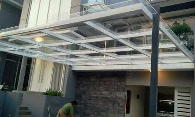
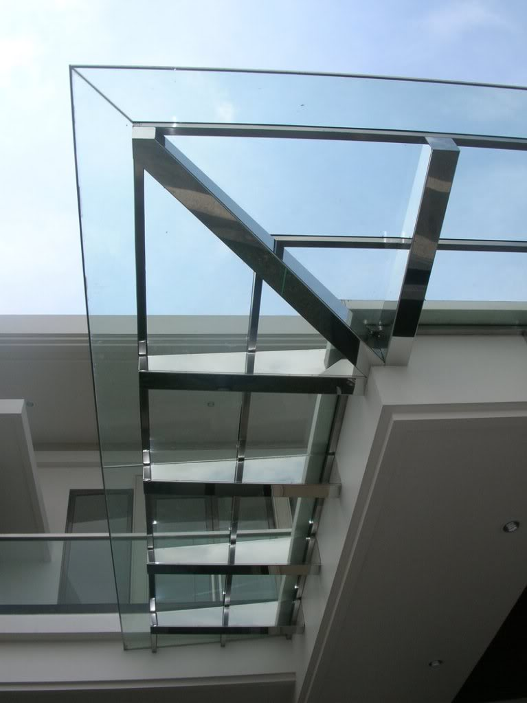

Daftar harga Jual & Pasang Kanopi Kaca Gantung di Pacitan terkini 2018, kanopi kaca ialah cara yang efektif menyalurkan cahaya natural via atap, dan juga membikin tampilan beberapa baris simetri dan spot fokus tunggal sehingga tampilan atap kanopi menjadi benar-benar indah dan berkelas. kanopi kaca dapat dibuat menggunakan material kaca flat.
Desain kanopi minimalis dikala ini yang banyak diminati merupakan desain kanopi yang memakai atap dari kaca tempered arau laminated. Kegunaannya yaitu untuk melindungi kendaraan yang terparkir di rumah atau beberapa benda dibawahnya dari sengatan sang surya maupun dari hujan. Eksistensi kanopi kongkretnya yaitu salah satu elemen pensupport desain eksterior rumah yang bisa membua tampilan rumah kian cantik.
Oleh maka, Anda dianjurkan untuk sangat selektif dalam memilih bahan dan ukuran kanopi yang akan dipasang di luar rumah. Perlu diingat, hal yang amat disarankan supaya Anda membeli bahan dan ukuran kanopi sesuai dengan keseluruhan desain rumah terutama pantas dengan desain eksterior lainnya.
Harga Kanopi Kaca Gantung Per Meter di Pacitan
Harga atap kaca skylight murah pasaran harga jual bagus di kota-kota besar seperti Jakarta, Surabaya dan lain-lain dengan cukup mudah anda temukan bagus di kios bangunan atau industri pabrik. Kanopi berasal dari kata canope (Bahasa Perancis) dan canopeum (Bahasa Latin) artinya berkaitan dengan desain interior tempat tidur yang memiliki 4 tiang dengan kain atau tirai menutupi bagian atas maupun samping sebagai pelindung dari benda-benda yang jatuh dari atas tempat tidur maupun sebagai pelindung dari udara yang dingin serta melindungi dari nyamuk.
Tetapi sekarang sudah menjelang masa yang kian modern, kanopi mempunyai pengertian yang meluas beserta fungsi serta penerapannya pada bangunan luar (Desain Eksterior) lebih-lebih pada rumah minimalis yang tengah menjamur dan menjadi eksistensi uniknya desain eksterior rumah minimalis.

Metode pasang kanopi kaca amat gampang tanpa memerlukan beberapa hari cukup satu selesai dalam profesi pembuatan kanopi rumah baik tempa atau minimalis. Kanopi merupakan suatu media penghambat cuaca demi melindungi barang-barang berharga yang berada di luar ruangan atau di halaman rumah anda. kanopi yang digunakan dalam arsitektur ketika ini yaitu sejenis atap untuk melindungi bagian luar rumah dari panas sang surya dan terpaan hujan.
Kanopi dalam perkembangannya sekarang marak digunakan pada komponen garasi kendaraan beroda empat dan balkon rumah, kantor dan bangunan lainnya. Kanopi juga dapat memberikan nuansa yang teduh dan tidak terasa panas yang juga berdampak pada ruangan lainnya baik didalam rumah, kantor, rumah sakit, kafe dan sebagainya. Kanopi sekarang juga telah banyak digunakan untuk lahan parkir kendaraan beroda empat di pinggir jalan dan juga banyak digunakan pada tiap halte-tempat pemberhentian bis.
Panasnya cahaya sang surya dalam penggunaan kanopi tentunya membuat radiasi cahaya sang surya tak akan dapat seketika menyentuh barang-barang anda. Sepertihalnya pada barang-barang yang dicat, seperti mobil, motor, meja, pintu dan kursi kafe, dsb.
Segala cat akan aman dan tidak akan mudah rusak apabila tidak via kontak segera dengan guyuran air hujan ataupun sinar sang surya yang akan membikin cat melepuh secara pelan.
Demikian pula pada kanopi PVC dan kanopi kaca, kanopi spandek yang memiliki keunggulan masing-masing. Tapi semua bahan ini bertujuan sama ialah untuk penambah bagian eksterior rumah dan menjadi pelindung dari terik panas sang surya dan guyuran air hujan. Malah pada rumah dengan desain tertentu, eksistensi kanopi diwajibkan ada untuk melengkapi desain dari rumah hal yang demikian. pada umumnya kanopi diletakkan di depan rumah untuk melindungi halaman parkir mobil atau melindungi bagian halaman rumah.
Kanopi Kaca Tempered & Laminated di Pacitan

Kanopi jenis ini memiliki sifat transparan seperti kaca namun ada pilihan banyak warna sehingga tidak monoton warna polos saja. Keunggulan lainnya, bahan polikarbonat lebih kuat dan lebih bendung panas; baru meleleh bila panas menempuh 2000 derajat celcius. Keunggulan ketiga, bahan polikarbonat ini fleksibel sehingga mempermudah ketika mendesain dan memasang kanopi.
Untuk harga, kanopi variasi ini jauh lebih murah daripada kanopi kaca dan kanopi akrilik. Bahan ini bisa bertahan sampai 10 tahun. Pengaplikasian bahan kanopi kaca diyakini mampu mengikuti keadaan pada temperatur berapapun dengan betul-betul bagus.
Pada temperatur yang amat panas kanopi kaca akan sanggup membiaskan panas hal yang demikian sehingga membikin nyaman pada orang yang berlindung dibawahnya. hal ini tidak akan menganggu bahan kanopi kaca dikala secara tiba-tiba terjadi hujan yang mewujudkan suhu berubah drastis dari panas ke dingin.
Informasi Lengkap Pemesanan
Sumber Referensi: https://www.dis.or.id/jual-pasang/kanopi-gantung-pacitan/
Facebook: https://www.facebook.com/DistributorOfIndustrialSupplyDIS/